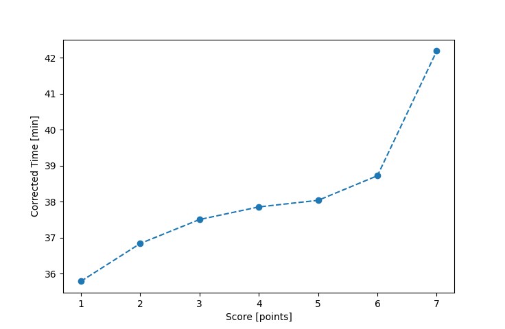

| Wind: | 2-3 (BFT) |
|---|---|
| RC: | Bill_P, Mike_S |
| Date: | June 09, 2019 |
| Notes: | M2 280 |
| Rank / Score | Name | Boat | Input Time [mm:ss] | Input Offset [mm:ss] | Race Time [mm:ss] | Race Time [s] | Handicap | Corrected Time [s] | Corrected Time [mm:ss] |
|---|---|---|---|---|---|---|---|---|---|
| 1.0 | Mike_F | SF | 35:56 | 00:00 | 35:56 | 2156 | 1.00400 | 2147 | 35:47 |
| 2.0 | Rod_H | LASEM | 35:50 | 00:00 | 35:50 | 2150 | 0.97300 | 2210 | 36:50 |
| 3.0 | Chris_E | SF | 37:39 | 00:00 | 37:39 | 2259 | 1.00400 | 2250 | 37:30 |
| 4.0 | Art_M | SWSX | 36:18 | 00:00 | 36:18 | 2178 | 0.95900 | 2271 | 37:51 |
| 5.0 | Nedra_F | SF | 38:11 | 00:00 | 38:11 | 2291 | 1.00400 | 2282 | 38:02 |
| 6.0 | Ron_F | F5 | 37:24 | 00:00 | 37:24 | 2244 | 0.96600 | 2323 | 38:43 |
| 7.0 | David_G | LASE | 38:56 | 00:00 | 38:56 | 2336 | 0.92300 | 2531 | 42:11 |

Application Notes:
All race results are unofficial
View source code at https://github.com/cessnao3/portsmouthracecalc/